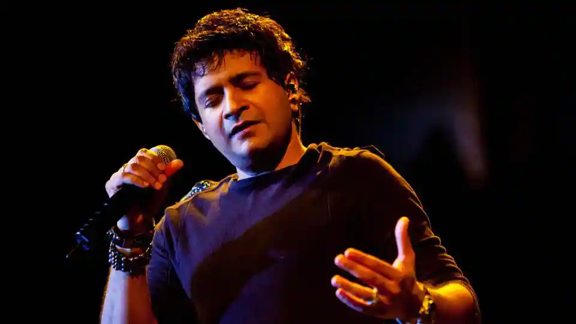

KRISHNAKUMAR KUNNATH KK
Krishnakumar Kunnath or K.K. (as he is popularly known as) was born on August 23, 1968. This Delhi-based singer came to Mumbai a few years ago in search for his career and finally, he got a call to sing a one-minute jingle for singer Leslie Lewis for UTV which kick started his career. He started singing and the age of two and was a part of his college rock band. He has sung over 3500 jingles including Monte Carlo, TVS Scooty, Amul, Britannia and Pepsi's Yeh Dil Maange More in a span of four years. His dream to sing for a Bollywood movie materialized when Vishal Bharadwaj asked him to sing "Chod Aaye Hum" in Sampooran Singh Gulzar's Maachis (1996). But what catapulted him into the big league was the wildly popular "Tadap Tadap" in Sanjay Leela Bhansali's Hum Dil De Chuke Sanam (1999). He still speaks in chaste Malayalam, remembers the sights and sounds of downtown Kerala and believes the best way to draw inspiration for emotions is to look at the poverty and people around us.